МЕДИЦИНСКАЯ ГАЗЕТА
17 октября 2020.
Группа ученых под руководством известного фармаколога д-ра Кристофа Абельса доказала влияние мелатонина на образование жировой ткани.
Разработка инновационного препарата контроля веса завершена.
Наш внештатный корреспондент взял сенсационное интервью с VII Международной научно-практической конференции SCIENTIFIC RESEARCH IN XXI CENTURY.
Д-р Кристоф Абельс — руководитель отдела исследований и разработок одного из ведущих производителей лекарственных средств, компании Bionorica SE.
Честно об исследовании, патентном скандале, коммерческих интересах и участии в программе Евросоюза.
Корреспондент: Доктор Абельс, спасибо за ваше выступление! И за то, что согласились дать интервью сейчас, несмотря на плотный график.
Итак, поздравляю! Разработка Melatoslim наконец завершена. И даже запущена программа по его распространению! Но обо все по порядку. Мы с читателями больше года следили за ходом вашего исследования. Давайте в общих чертах напомним, с чего оно началось и как вы пришли к результату.
Д-р Абельс: Началось все чуть больше двух лет назад. Тогда наша группа изучала влияние мелатонина (гормона сна) на биохимический баланс организма — и получила интересные данные. Как оказалось, он непосредственно участвует в образовании бежевой жировой ткани. Эта ткань является промежуточной между белой и бурой. И точно так же, как бурая, быстро метаболизируется, участвуя в термогенезе, независимо от вашей физической активности.
Иными словами, перерабатывая эту ткань, ваше тело активно выделяет тепло. Причем, чтобы запустить этот процесс, вам не нужно ничего делать — сама структура бежевого жира предполагает, что калории как бы “сгорают” без вашего участия — а вы, соответственно, худеете. И, что интересно, наиболее активно этот процесс протекает в стадии глубокого сна.
Корреспондент: То есть, если в организме вместо белой жировой ткани будет появляться бежевая — то человек начнет худеть вне зависимости от того, что он ест и занимается ли спортом?
Д-р Абельс: Да, совершенно верно. (смеется) Понимаю, что вам это кажется фантастикой, я и сам поначалу так подумал.
Корреспондент: Вы знаете, еще большей фантастикой мне кажется то, что этот процесс активизируется во сне! Как такое возможно?
Д-р Абельс: Мы полагаем, что это эволюционная особенность. Ведь когда наши далекие предки переселялись в регионы с более жестким климатом, холодные ночи стали настоящей проблемой. Нужно было как-то согревать организм в фазе глубокого сна, когда физическая активность отсутствует. Без такой вот естественной “печки” они бы просто не выжили.
Корреспондент: А сейчас мы утрачиваем эту особенность?
Д-р Абельс: Нет, она по-прежнему сохранилась. Проблема в другом. У современных людей нарушен естественный баланс мелатонина. Наши города освещены круглосуточно — организм просто “не понимает”, что настала ночь. Как следствие — гормон сна просто не вырабатывается. Давно известно, что из-за нарушения ритмов сна и бодрствования возникает масса проблем со здоровьем. Как оказалось — лишний вес тоже.
Получается, что и бежевая жировая ткань не образуется, и люди не впадают в глубокий сон, необходимый для ее расщепления — так как оба этих процесса завязаны именно на концентрации мелатонина в организме. Именно поэтому ожирение — проблема городов. Заметьте, в деревнях и отдаленных селах людей с лишним весом гораздо меньше.
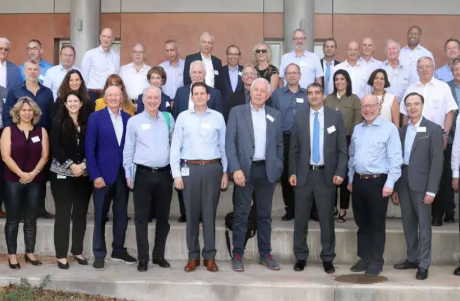Корреспондент: А как вы все это выяснили?
Д-р Абельс: Мы проводили клинические испытания средства от бессонницы, поэтому сразу не заметили связи между концентрацией мелатонина и весом пациентов. Но когда я готовил к публикации результаты — конечно же, не мог не обратить на нее внимание. Запросил дополнительные исследования, все перепроверил, сопоставил данные. И понял, что это — революция в сфере диетологии!
Конечно же, я решил провести еще один цикл исследований. Ведь несмотря на мою уверенность, нужно было все основательно проверить. И только после этого мы запросили финансирование на разработку препарата. Кстати, то и дело слышу, что открытие совершил я. Но все же это была совместная работа, и я отталкивался от данных нашей исследовательской группы.
В исследовании участвовала целая группа специалистов разных сфер из нескольких стран. Медики, фармацевты, генетики, биологи и даже антропологи и палеонтологи! Мы сотрудничали с 12-ю лабораториями по всему миру — чтобы получить данные независимых исследований и убедиться, что наши выкладки верны.
Корреспондент: Но вы, как глава группы, направляли ход исследований. И к тому же, именно вы обратили внимание на связь между мелатонином и образованием жира.
Д-р Абельс: (смеется) Ну, если бы не я, то кто-то другой непременно увидел бы эту связь и начал исследования. Ведь это может помочь огромному количеству людей, страдающих от лишнего веса. Да и давайте признаем, что действительно работающий препарат для похудения — просто золотая жила!
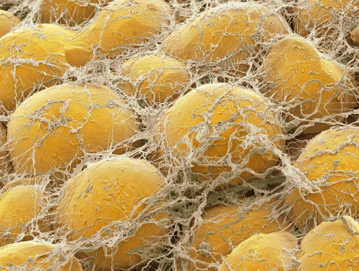Корреспондент: Именно из-за этого разгорелся тот самый патентный скандал, о котором столько шумели СМИ? Препарат принесет огромную прибыль?
Д-р Абельс: Дело не только в прибыли от продажи препарата. Но еще и в том, что мы фактически переворачиваем рынок. Ведь многие люди обращаются к диетологам и занимаются с тренерами с главной целью — похудеть. Если же появится возможность худеть во сне — многие консультанты по снижению веса окажутся просто не нужны. Как и различные тренажеры, утягивающее белье и так далее.
Не говоря уже о том, что на рынке существует масса лекарств и биодобавок для похудения. Основная часть из них работает за счет вывода воды, подавления аппетита, связывания поступающих в организм питательных веществ или присутствия в составе балластных компонентов, вызывающих иллюзию сытости. В любом случае их прием связан с дискомфортом, ограничениями, а то и вовсе вреден для здоровья. А тут появляется безопасное средство, позволяющее худеть во сне…
В общем, наше исследование так или иначе окажет большое влияние на всю индустрию здоровья и красоты. Поэтому скандалы как в настоящем, так и в будущем, неизбежны.
На самом деле, мы изначально не планировали завышать цену на препарат — ведь наша работа финансировалась как за счет собственных средств, так и за счет поддержки Евросоюза. Часть необходимых нам статистических данных мы запросили у Всемирной организации здравоохранения и европейских медицинских организаций. Некоторыми наработками поделились иностранные коллеги из частных клиник. За два года открытие превратилось в международный проект, поэтому мы не считаем себя вправе присвоить его.
Патент был оформлен как раз для того, чтобы наши результаты не использовали сторонние компании — ведь полностью сохранить все в тайне было невозможно.
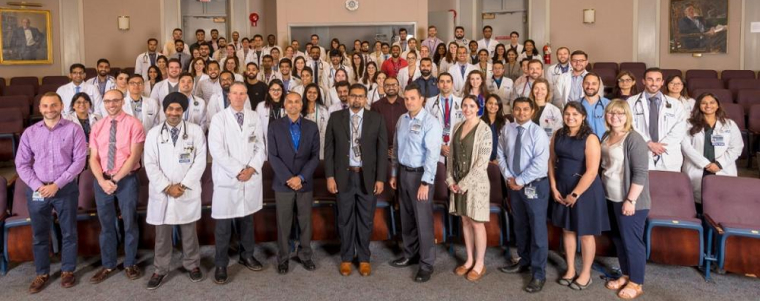Корреспондент: Помимо патента, были ли реальные проблемы с самой разработкой? В феврале вы сделали заявление, что вам нужно больше времени. А в фармакологических кругах ходили слухи, что вы зашли в тупик.
Д-р Абельс: Тогда я не стал говорить прямо, чтобы не спровоцировать очередной скандал. В статье о результатах доклинических исследований Melatoslim было несколько ошибок. Их обнаружили при рецензировании. Причем две ошибки — в отчете, содержащем сводные статистические результаты. Конечно же, мы отозвали статью и приостановили исследования — чтобы перепроверить данные.
В итоге все оказалось верно — просто следствие нескольких опечаток. Что неудивительно, учитывая темп, в котором работала вся группа. Через два месяца мы выпустили статью и продолжили исследование.
Корреспондент: Сейчас мы готовим в публикацию статью о клинических испытаниях Melatoslim. Хочу выразить вам благодарность за то, что дали такие полные данные. Но можете сейчас коротко рассказать о результатах?
Д-р Абельс: Насколько я помню, вам материал отправлял мистер Номура? (смеется) Если это так — то материалов хватит на несколько статей, он действительно очень кропотливо подходит к работе. Если коротко, то результаты такие:
В исследовании принимало участие 5600 пациентов. Мы поделили их на группы в зависимости от индекса массы тела:
-
1 группа:
25—30 (предожирение) — 2128 пациентов.
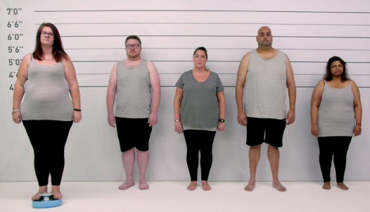 -
2 группа:
30—35 (ожирение) — 1512 пациентов.
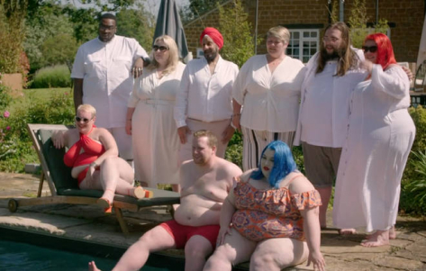 -
3 группа:
35—40 (ожирение резкое) — 1400 пациентов.
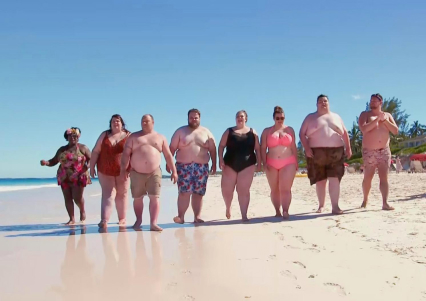 -
4 группа:
40 и более (очень резкое ожирение) — 560 пациентов.
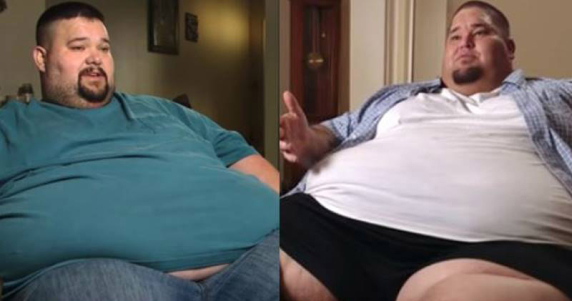
У пациентов 4-й группы наблюдалось интенсивное снижение массы тела в первую неделю приема, у вот пациенты 1-й худели медленнее. Это обусловлено особенностями распределения жировой ткани и ее преобразования — на разных участках тела процесс идет с разной интенсивностью. Соответственно, если жировой ткани много — и результаты сразу более заметны.
В среднем пациенты сбрасывали за неделю от 3 до 12 кг — в зависимости от степени ожирения и особенностей метаболизма.
После месяца приема результаты были такие:
-
1 группа:
вес 1909 пациентов пришел в норму,
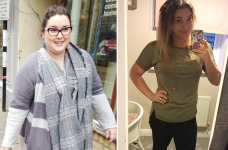 -
2 группа:
вес 1367 пациентов пришел в норму,
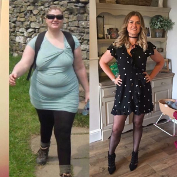 -
3 группа:
вес 1299 пациентов пришел в норму,
-
4 группа:
вес 321 пациента пришел в норму.
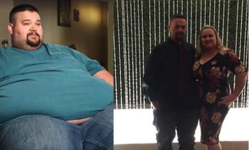
Процесс похудения проходил с разной интенсивностью, но наблюдался у всех пациентов. К исходу первого месяца у нас не осталось ни одного пациента с индексом массы тела выше 35! То есть пациенты 3-й и 4-й групп за месяц преодолели половину своего пути к нормальному весу! Мы просто не верили, что такое возможно. А у нескольких пациентов (в том числе из 2 и 3 группы) к концу месяца обнаружился пониженный индекс массы тела — и это нас достаточно сильно обеспокоило.
Мы оплатили полный комплекс обследований, однако никаких патологий или отклонений обнаружено не было. То есть, это индивидуальные особенности метаболизма — которые проявили себя, как только баланс жировой ткани и концентрация мелатонина были восстановлены.
В течение следующих 3-х месяцев индекс массы тела всех пациентов был не выше 23,8 — что укладывается в пределы нормы. Особенно запомнился один молодой парень из Кёльна, который в начале исследования весил 120 кг. при росте 168 см! Через два месяца его вес составлял чуть больше 70 кг. Его невозможно было узнать на фотографии — это был просто другой человек. Недавно получил от него приглашение на свадьбу.
Корреспондент: Получается, что вы общаетесь с некоторыми пациентами до сих пор?
Мы продолжаем наблюдение за всеми участниками исследования. Среди 27% тех, кто окончил прием препарата после месяца приема, наблюдаются колебания в весе в пределах 3 кг. Однако набор веса не отмечен ни у одного из них.
Корреспондент: Вы говорили, что разработка превратилась в международный проект и получила поддержку Евросоюза. Расскажите, как так получилось.
Д-р Абельс: Изначально мы планировали выпускать продукт за счет собственных средств. Но к тому времени, как собрали все необходимые данные, в разработке уже было еще несколько перспективных препаратов. Поэтому решили подать заявку на финансирование в Европейский центр профилактики и контроля заболеваний (ECDC). Не особо надеялись на удачу — ведь желающих получить субсидии было много. Да и лишний вес — не настолько серьезная проблема.
Как оказалось, мы ошибались. Евросоюз и правительства отдельных стран готовы финансировать такие исследования.
Поэтому Melatoslim будет официально распространяться по программе ECDC. Эта программа рассчитана на 5 лет и включает целый комплекс мероприятий по борьбе с лишним весом и сердечно-сосудистыми заболеваниями.
Корреспондент: Насколько я знаю, больше десяти стран подключились к проекту, когда исследования были завершены.
Д-р Абельс: Да, наша разработка заинтересовала многих. Мы представили препарат на Natexpo 2020 и Международном медицинском форуме iMF 2020. Изначально позиционируя его как часть программы ECDC. После этого нас просто засыпали предложениями — как коммерческой, так и социальной направленности.
Участвовать в коммерческих программах мы не могли, т.к. уже были связаны обязательствами перед Евросоюзом и иностранными коллегами. Да и в любом случае не стали бы — ведь в рамках этих предложений предполагалось продавать Melatoslim только через конкретные аптечные сети, сайты или специализированные магазины. Одна компания предложила розничную цену в 570$! Это даже не меркантильность, а чистое безумие!
Естественно, поступили заявки на закупку Melatoslim и проведение подобных программ в других странах — тех, где ученым и медикам удалось получить поддержку правительства. В таких проектах мы приняли участие. Ведь кроме пользы для людей, это обеспечило вливания и в экономику Германии.
Корреспондент: То есть Германия и Bionorica SE получают процент от продажи в других странах?
Д-р Абельс: Нет, согласно договоренностям Германии поступили единоразовые платежи — за разрешение на продажу препарата. Наша компания также получила деньги за разработку и проведенные исследования. И теперь Melatoslim распространяется без накрутки, по оптовой цене — как у нас, так и по всей Европе.
При этом страны, участвующие в программе, не имеют права продавать Melatoslim дороже установленной цены — 00 долларов или эквивалента в национальной валюте. Это прописано в договорах, а за нарушение следуют жесткие санкции — от штрафов на сотни тысяч долларов до прекращения поставок. Т.к. некоторые страны еще не оправились после карантина, ECDC временно снизил цену на 50%. Поэтому и отпускная цена будет в два раза ниже.
Корреспондент: Давайте расскажем нашим читателям о том, что представляют собой эти программы и как принять в них участие.
Д-р Абельс: Суть в следующем. Страна закупает Melatoslim и продает его любым удобным способом, главное — не выше установленной цены. Эта цена рассчитана так, чтобы учесть транспортные расходы и обеспечить минимальные вливания в экономику. Естественно, большинство стран продает средство через Интернет — ведь это выгоднее, чем продажа в аптеках, которые будут требовать свою долю от продажи и пытаться всеми способами накрутить процент.
Готовясь к нашему интервью, я уточнил адрес официального сайта, где в России продается Melatoslim. Прошу вас разместить эту информацию при публикации вместе со скриншотом главной страницы — чтобы люди не купили подделку.
Дело в том, что в соседних странах, которые также участвуют в программе, уже зарегистрированы случаи мошенничества. Слышал, что даже возбуждены уголовные дела.
Для того, чтобы получить Melatoslim по программе — необходимо оформить заявку и дождаться звонка оператора. Если на момент обработки вашей заявки препарат будет на складе — вам его тут же отправят. Если препарата не будет — оператор сообщит информацию о времени следующего поступления.
Помните про скидку 50%. Если у вас средство продают дороже — пишите представителям ECDC!
Обратите внимание, что оплата препарата осуществляется только после получения. Если у вас просят деньги вперед — это мошенники!
Корреспондент: Спасибо вам за такую подробную информацию! И все же последний, каверзный вопрос. Где гарантия того, что препарат эффективен?
Д-р Абельс: Знаете, что интересно? Я давал интервью в нескольких странах, но впервые сталкиваюсь с таким вопросом. Как правило, если какое-то средство распространяется при поддержке мировых организаций здравоохранения — это уже воспринимается как гарант качества и эффективности. Ведь если они масштабно профинансируют выпуск неэффективного средства, да еще и в рамках государственных программ — крупного скандала, огласки и народных волнений не избежать. Ну да это уже политика...
Поэтому поддержка ECDC — это итоговое доказательство качества.
Остальные доказательства и вообще полную информацию о проведенной нами работе можно будет найти в открытом доступе — в рецензируемых изданиях (в основном в Германии, США и Японии), на исследовательских и медицинских сайтах. Сейчас мы готовим публикации для PubMed, Springer и Health.
Так что при желании можно изучить препарат досконально и даже перепроверить или опровергнуть наши исследования.
Корреспондент: Спасибо вам! И за интервью, и за то, что делаете жизнь людей лучше. И, конечно, за то, что не продаете свои препараты за сотни долларов, даже когда вам предлагают!
P.S. По просьбе д-ра Абельса размещаем ссылку на официальный российский сайт Melatoslim и скриншот его главной страницы.
Будьте здоровы и берегите себя!
Важная информация: с 21..2021 начнется отбор для дополнительных клинических исследований действия Melatoslim на пациентов с индексом массы тела 40 и более.
Исследование будет проводиться в Германии на базе исследовательского центра Bionorica SE.
Для участия в отборе иностранным гражданам необходимо оформить визу и приобрести билеты за свой счет (туда и обратно). При успешном прохождении отбора жилье и медицинские процедуры будут оплачены за счет Bionorica SE.
1112 комментариев за сегодня
Дана Дана
Читаю их статью в ПабМеде… я профессиональный диетолог и не верю в такие способы похудения. Но пока все логично…
час назад
Алина Исаева
Заказала. Жду. Пока ничего не могу сказать, знакомых, которые пользовались, у меня нет.
час назад
Вадим Миронов
Принимаю неделю. На самом деле сомневался только потому, что это поддержало наше правительства. Но на этот раз, на удивление, не обманули — реально сбросил 6,5 кг! ))))
час назад
Сергей Бирюков
Сколько тут, оказывается русских эмигрантов собралось! У меня знакомые участвовали в программе! Килограмм по 10 сбросили оба!
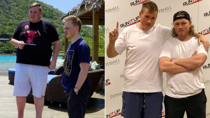час назад
Анастасия Гариева
Тоже заявку оставила пока такая цена. Обещали в течение 3 дней доставить, что ж, будем ждать. Особо не верю, но не такие большие деньги-то…
час назад
Марина Антипченко
Уфф, еле успела заказать! Оператор говорит, почти не осталось ничего. А новую партию завезут только через два месяца!
час назад
Светлана Самойлова
Женя, в Интернете раздают, потому что прибыль уже получили и хотят набрать очков в глазах народа. Ну и пусть так, хоть что-то полезное делают!!! Оплата при получении, заявку оставила - мне курьер привез, я все проверила, посмотрела и забрала. Кажется, не развод
час назад
Марат Манаев
Жена принимала его. Действительно похудела, как будто помолодела — стало больше сил и желания. И у нее, и у меня, если вы понимаете, что я имею в виду…
час назад
Александра Батурина
Читала отзывы и поняла, что надо брать) Пойду заявку оставлю, пока не разобрали!
час назад
Даша Игнатьева
Вы не поверите и у меня была такая же проблема. Мне помог спорт! Не страдайте херней! Не помогают всякие капли и таблетки! Только специальные комплексы упражнений (пишите в личку)
Вот мои фото до и после!
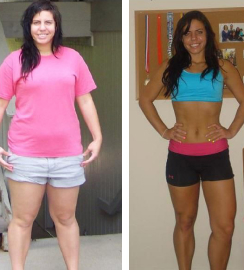час назад
Анастасия Древко
Даша, угу-угу, видела я вас в комментах под другой статьей с рекламой ваших “программ” за 5000 рублей!
час назад
Рахат Каметова
Спасибо! Если бы не вы — никогда бы не узнала об этом лекарстве. Правительство как-то не спешит рекламировать… непонятно, почему…
час назад
Анатолий Дубовицкий
Рахат, да рекламировали! Я по телевизору видел, в новостях… не помню, когда. Где-то месяц назад или больше. И мужика из статьи тоже видел — его по кабельному полгода назад то и дело крутили.
час назад
Рахат Каметова
Анатолий, ну, я ТВ не смотрю почти — может, поэтому пропустила. Но я считаю, надо плакаты развешивать или что-то в этом роде.
У моей тети ожирение ужасное, ей точно надо — закажу!
час назад
Регина Лебедь
N превзошел мои ожидания! Принимала месяц, сейчас чувствую себя лет на 20 моложе!
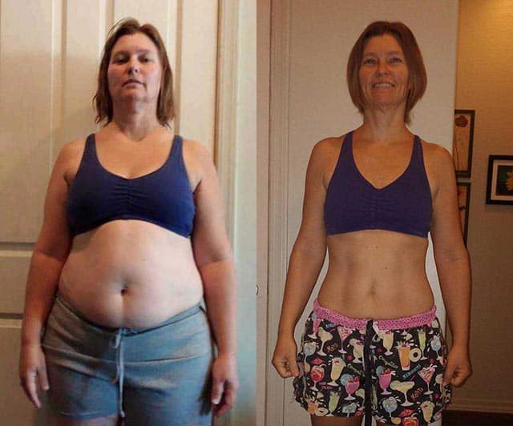час назад
Карина Шварц
Ееее, мы с мужем участвовали в этой программе!
Мне повезло в 20 лет выскочить за него замуж и уехать в Германию…
вот такие мы были (1 фото)...
и вот что с нами сделали пиво и сардельки (2 фото)...
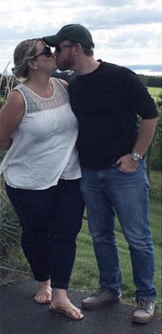и вот как нам помогло участие в этой программе (3 фото)...
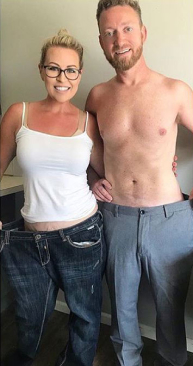20 минут назад